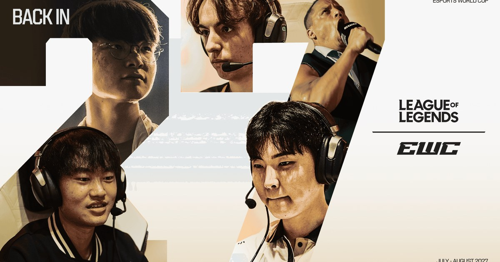

Esports World Cup 2027 names its first five games — League of Legends, Valorant, Fatal Fury, Chess and Dota 2
The Esports Foundation has unveiled the first five titles for the 2027 Esports World Cup: League of Legends, Valorant, Fatal Fury: City of the Wolves, Chess and Dota 2 return for the summer event, with more titles, qualifiers and Club Championship details still to come.

Disclosure: this post contains affiliate links. I earn a commission on qualifying purchases.
The 2027 Esports World Cup is starting to take shape. The Esports Foundation announced on November 25 the first five titles for next summer's tournament: League of Legends, Valorant, Fatal Fury: City of the Wolves, Chess and Dota 2. The event runs in July and August 2027, with more titles, qualification pathways, tournament schedules and Club Championship details to be revealed in the coming weeks.
All five are returning titles, not debuts — and each one carries a storyline into next summer.
League of Legends: can anyone break the Korean streak?
League of Legends returns for a fourth consecutive year, and South Korea has owned it from the start. Three different Korean teams have lifted the trophy in three editions — T1, Gen.G, and most recently Dplus KIA, who won the 2026 edition in Paris. All three also reached the quarterfinals at the recent League of Legends World Championship, which Bilibili Gaming won. The big question for 2027 is whether BLG, the reigning world champions, can become the first Chinese team to win the League of Legends title at the Esports World Cup.
Valorant: 100 Thieves defend an undefeated run
Valorant is back after a 2026 edition won by 100 Thieves, who finished the tournament undefeated and beat world champions NRG in the final. The Foundation expects 100 Thieves, NRG, LOUD, Paper Rex, Team Vitality, Team Liquid and 2026 Club Champion AG.AL among the field again in 2027.
Fatal Fury and Chess: the three-timers
Fatal Fury: City of the Wolves and Chess have both been included as official titles for three consecutive years. NAVI's Luis Guadalupe "DarkAngel" Castillo Gomez won the Fatal Fury title at the 2026 event. In Chess, Magnus Carlsen has won two straight — defending his title undefeated at the 2026 tournament, with AG.AL's Denis Lazavik finishing runner-up.
Dota 2: no repeat winner yet
Dota 2 returns for a fourth consecutive year, and it remains the most wide-open title on the slate. Three different clubs with three completely different rosters have lifted the trophy over the past three iterations, and no club or player has ever won it twice. PVISION claimed the championship at the 2026 event after a semifinal defeat the year before.
What else is confirmed
Two more titles have already been confirmed separately for 2027 through the Esports World Cup's own press room: Counter-Strike 2, which returns for 2027 and 2028, and Street Fighter 6, back for a fourth consecutive year. The Foundation says it will reveal additional titles, qualification routes and the Club Championship structure over the coming weeks. AG.AL claimed the 2026 Club Championship in Paris, a seven-week event featuring more than 2,000 players, 200 clubs and 25 tournaments.
The first five are the spine of the 2027 event. The rest of the lineup — and whether anyone can finally take a title off Korea in League of Legends — comes next.
Gear up: Razer — mice, keyboards, headsets and laptops.